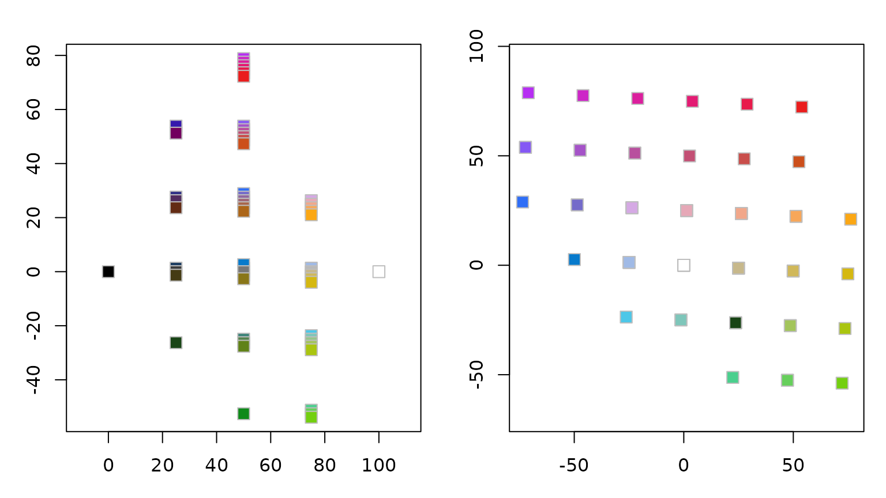
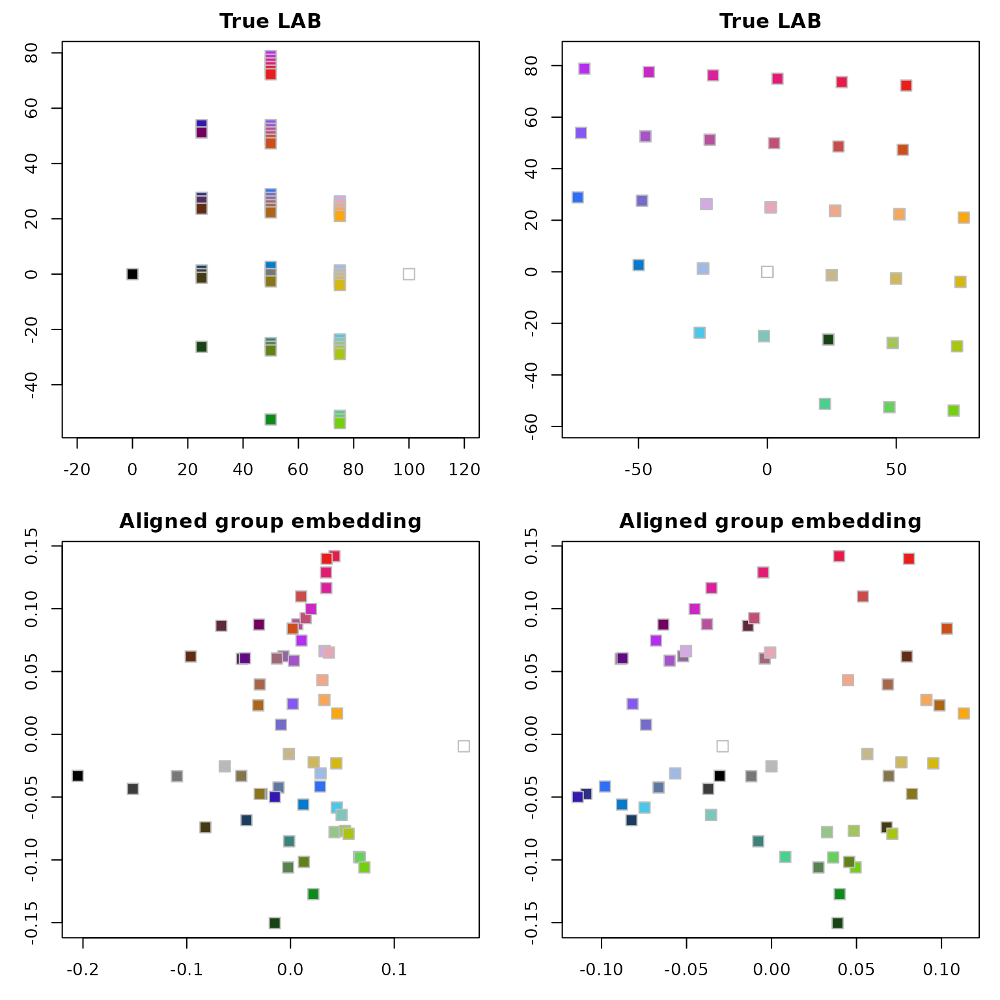
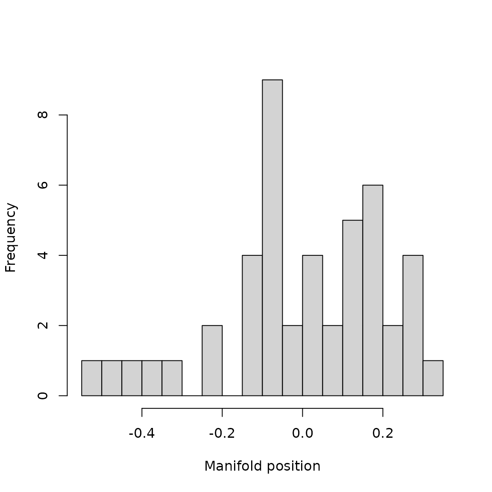
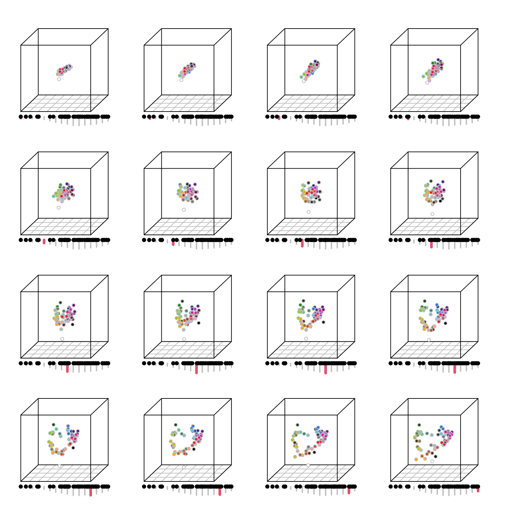
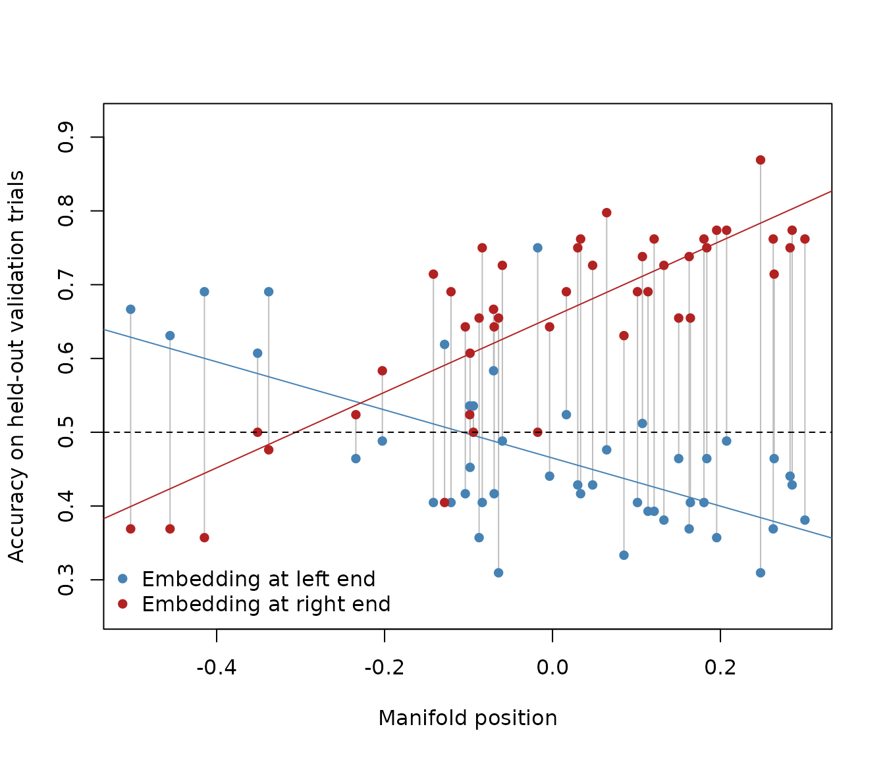

Characterizing Individual Differences Along a Continuous Manifold
trajectory_vignette.RmdIntroduction
The other vignettes in this package mostly treat individual
differences in representation as a question of clustering: do
participants fall into a small number of qualitatively distinct groups
(see vignette("tripletTools")’s clustering section, and
test_for_clusters()/test_cluster_stability())?
That’s a natural first question, but it assumes the answer is discrete.
Sometimes it isn’t – individual differences can instead vary smoothly
along a continuum, with no natural dividing line between
participants at one end and the other.
This vignette walks through that alternative using a real dataset: triplet similarity judgments on 58 color patches spanning color space, from 46 participants, collected by Clementine Zimnicki and described in a poster presented at the Annual Meeting of the Cognitive Science Society (Zimnicki et al.; https://escholarship.org/uc/item/8778p3t3). Participants judged which of two option patches was more similar in color to a reference patch, with no further instruction about what “similar” should mean. It covers:
-
generalized_procrustes()– aligning many embeddings into one shared consensus frame -
smooth_embedding_trajectory()– a kernel-weighted average embedding at points along a continuous 1-D axis of individual variation -
plot_3d_trajectory()/plot_2d_trajectory()– visualizing how the representation changes along that axis -
test_dominant_dimension()– a direct statistical test for a single dominant axis, where Horn’s parallel analysis is known to be conservative -
loo_trajectory_accuracy()– testing whether manifold position predicts held-out judgments, without the data leakage a naive version of this test would have
The dataset is bundled with the package as
color_triplets (raw judgments),
color_emb_ind/color_emb_group (precomputed 3-D
embeddings, fit the same way as in
vignette("embedding_vignette")), and color_lab
(the patches’ own CIE LAB coordinates, for comparison).
The stimuli
The 58 patches span color space fairly evenly in CIE LAB coordinates.
Their hex codes double as both item identifiers and plotting colors
throughout this vignette. color_lab and the embedding
objects (color_emb_group/color_emb_ind) aren’t
guaranteed to list the 58 patches in the same row order (confirmed they
don’t, here), so we fix one canonical order up front – matching the
embeddings, since that’s what most of this vignette plots – and derive
pcols from it, rather than re-deriving row order (and
risking a mismatch) in every later chunk:
pcols <- rownames(color_emb_group) # canonical item order used throughout
lab_matched <- color_lab[pcols, ] # color_lab re-indexed to match it
par(mfrow = c(1, 2), mar = c(3, 3, 2, 1))
plot(lab_matched[, c("l", "a")], pch = 22, bg = pcols, col = "gray",
xlab = "L", ylab = "a", asp = 1, cex = 1.6)
plot(lab_matched[, c("b", "a")], pch = 22, bg = pcols, col = "gray",
xlab = "b", ylab = "a", asp = 1, cex = 1.6)
The 58 color patches plotted in their true CIE LAB coordinates (lightness vs. a, and b vs. a).
Does the group embedding recover real color space?
pr <- vegan::procrustes(lab_matched, color_emb_group, symmetric = TRUE)
aligned <- pr$Yrot
rownames(aligned) <- pcols
cat("Procrustes correlation:", round(sqrt(1 - pr$ss), 3), "\n")
#> Procrustes correlation: 0.866
par(mfrow = c(2, 2), mar = c(3, 3, 2, 1))
plot(lab_matched[, c("l", "a")], pch = 22, bg = pcols, col = "gray",
xlab = "L", ylab = "a", asp = 1, cex = 1.6, main = "True LAB")
plot(lab_matched[, c("b", "a")], pch = 22, bg = pcols, col = "gray",
xlab = "b", ylab = "a", asp = 1, cex = 1.6, main = "True LAB")
plot(aligned[, 1:2], pch = 22, bg = pcols, col = "gray", cex = 1.6,
xlab = "dim 1", ylab = "dim 2", main = "Aligned group embedding")
plot(aligned[, c(3, 2)], pch = 22, bg = pcols, col = "gray", cex = 1.6,
xlab = "dim 3", ylab = "dim 2", main = "Aligned group embedding")
True CIE LAB coordinates (top) vs. the group triplet embedding aligned to them via Procrustes (bottom).
The two spaces are correlated overall (Procrustes correlation ~0.87) – the group embedding does roughly recover real color space. But the recovered arrangement is visibly not the regular grid that true LAB space is: patches bow into a warped, roughly ring-shaped arrangement rather than staying evenly spaced. That’s already a hint that participants’ judgments are organized by something closer to color category than by precise perceptual distance – a useful fact to hold onto, since it’s exactly the kind of structure the trajectory analysis below will unpack further.
Is there discrete cluster structure across participants?
Before assuming individual differences are continuous, it’s worth
checking whether they’re actually discrete. get.rep.dist()
gives a participant-by-participant representational distance matrix from
the individual embeddings; test_for_clusters() checks both
whether there’s any real cluster structure at all (Hopkins statistic)
and, if so, how many clusters (BIC):
repdist <- get.rep.dist(color_emb_ind)
test_for_clusters(repdist, max_clusters = 5, seed = 3)
#> Package 'mclust' version 6.1.3
#> Type 'citation("mclust")' for citing this R package in publications.
#> Dimensions used (k_use): 1
#> Hopkins statistic: 0.525 (p = 0.3137 for H0: no clustering)
#> -> no evidence of cluster structure beyond what's expected by chance
#> BIC by number of clusters (lower is better):
#> G=1 G=2 G=3 G=4 G=5
#> -9.71 -6.75 -7.30 -1.10 6.57
#> -> best supported number of clusters: 1
#> -> winning covariance model at G=1: XThe Hopkins statistic is non-significant and the BIC search prefers a
single component (best_g = 1) – no evidence of discrete
subgroups. That rules out the clustering approach used elsewhere in this
package and motivates treating individual differences as continuous
instead.
A continuous axis of individual differences
estimate_intrinsic_dimension() asks how many real
dimensions of variation exist among participants’ embeddings (as opposed
to how many dimensions the color embeddings themselves have):
estimate_intrinsic_dimension(repdist, seed = 3)
#> Observed vs. permutation-null eigenvalues (kept = observed > threshold):
#> dim observed threshold kept
#> 1 1 0.0410 0.0556 FALSE
#> 2 2 0.0213 0.0382 FALSE
#> 3 3 0.0180 0.0323 FALSE
#> 4 4 0.0154 0.0283 FALSE
#> 5 5 0.0143 0.0253 FALSE
#> 6 6 0.0140 0.0229 FALSE
#> 7 7 0.0128 0.0212 FALSE
#> 8 8 0.0122 0.0193 FALSE
#> 9 9 0.0116 0.0176 FALSE
#> 10 10 0.0114 0.0161 FALSE
#> 11 11 0.0110 0.0148 FALSE
#> 12 12 0.0108 0.0136 FALSE
#> 13 13 0.0105 0.0126 FALSE
#> 14 14 0.0100 0.0116 FALSE
#> 15 15 0.0098 0.0107 FALSE
#> 16 16 0.0094 0.0098 FALSE
#> 17 17 0.0091 0.0090 TRUE
#> 18 18 0.0089 0.0083 TRUE
#> 19 19 0.0088 0.0075 TRUE
#> 20 20 0.0086 0.0069 TRUE
#> 21 21 0.0082 0.0063 TRUE
#> 22 22 0.0077 0.0057 TRUE
#> 23 23 0.0075 0.0051 TRUE
#> 24 24 0.0074 0.0047 TRUE
#> 25 25 0.0070 0.0042 TRUE
#> 26 26 0.0070 0.0037 TRUE
#> 27 27 0.0068 0.0034 TRUE
#> 28 28 0.0064 0.0030 TRUE
#> 29 29 0.0063 0.0026 TRUE
#> 30 30 0.0061 0.0023 TRUE
#> 31 31 0.0058 0.0020 TRUE
#> 32 32 0.0055 0.0017 TRUE
#> 33 33 0.0051 0.0014 TRUE
#> 34 34 0.0049 0.0012 TRUE
#> 35 35 0.0046 0.0010 TRUE
#> 36 36 0.0045 0.0008 TRUE
#> 37 37 0.0041 0.0007 TRUE
#> 38 38 0.0040 0.0005 TRUE
#> 39 39 0.0038 0.0004 TRUE
#> 40 40 0.0036 0.0003 TRUE
#> 41 41 0.0034 0.0002 TRUE
#> 42 42 0.0032 0.0001 TRUE
#> 43 43 0.0031 0.0001 TRUE
#> 44 44 0.0029 0.0000 TRUE
#> Note: not even the leading dimension exceeded its permutation threshold; k forced to the minimum of 1 rather than 0.
#> This is likely a false negative rather than a genuine absence of structure: the leading eigenvalue (0.041) is about 4.9x the typical size of the rest (0.00829), suggesting one real dominant dimension. Horn's parallel analysis is known to be conservative for exactly this case: when nearly all the real signal is concentrated in a single factor, the permutation null preserves each column's own variance (only scrambling which participant has which value), so the null's own top eigenvalue ends up built largely from that same dominant variance -- the leading dimension effectively has to 'beat a shuffled version of itself,' a bar that's unusually hard to clear regardless of how strong the true signal is.
#> Simulation-based dominance test (direct, not heuristic -- see ?test_dominant_dimension): p-value = 0.001. This directly supports a genuine dominant leading dimension, rather than inferring it indirectly from dominance_ratio alone.
#> -> estimated intrinsic dimension: 1This comes back “forced to 1” – Horn’s parallel analysis has to beat
a shuffled version of the leading dimension’s own (already dominant)
variance, which is an unusually hard bar to clear, and is a known
false-negative pattern for exactly this case (see
?estimate_intrinsic_dimension). But two further pieces of
evidence point the same direction: the leading eigenvalue is about 5x
the typical size of the rest, and – more directly –
test_dominant_dimension()’s simulation-based significance
test (run automatically above, since test_dominance = TRUE
by default) rejects the no-structure null outright (p = 0.001). Unlike
the eigenvalue-magnitude comparison Horn’s test makes, this test
compares a scale-invariant statistic (proportion of variance explained)
against a null simulated at equal variance across candidate dimensions,
which sidesteps the “beat a shuffled version of itself” problem – see
?test_dominant_dimension for why, and for a worked example
where this same test does not reach significance despite a
similarly large eigenvalue ratio (smaller sample sizes have less power
to detect the same effect size). Combined with the non-significant
Hopkins result above (no evidence of multiple discrete components
either), this is solid evidence for one real, continuous dimension of
individual variation – not zero dimensions of structure.
cmdscale() gives each participant’s own position along
that one dimension:

Distribution of participants’ positions along the single estimated axis of representational variation.
Positions spread fairly evenly across the axis, with no obvious gap
separating two groups – consistent with a genuine continuum rather than
two clusters that test_for_clusters() simply failed to
detect.
A smoothed trajectory along the manifold
smooth_embedding_trajectory() takes each participant’s
embedding and their position along this axis, and computes a
kernel-weighted average embedding at a grid of query points spanning the
axis. Internally, it first runs generalized_procrustes() to
align every participant’s embedding into one shared consensus frame (via
iterative GPA, Gower 1975) – without that step, averaging embeddings
that are each in their own arbitrary rotation would wash out any real
structure.
traj <- smooth_embedding_trajectory(color_emb_ind, pos, n_query = 16)
names(traj)
#> [1] "query_points" "embeddings" "effective_n" "bandwidth" "kernel"
#> [6] "gpa"traj$effective_n (Kish’s effective sample size) tells us
how many participants are really contributing to each query point –
useful for flagging the boundary regions, which are necessarily driven
by fewer people:
range(traj$effective_n)
#> [1] 3.529983 24.224764Visualizing the trajectory
plot_3d_trajectory() draws one query point at a time,
with a gray strip along the bottom showing effective_n
across the whole axis and a red marker showing which point is currently
displayed. Plotting all 16 query points in sequence shows the
representation changing smoothly:
par(mfrow = c(4, 4), mar = c(1, 1, 1, 1), oma = c(1, 1, 1, 1))
for (i in 1:16) {
plot_3d_trajectory(traj, pos, loc = i, pcols = pcols, bcols = "gray")
}
The group representation at 16 points along the manifold, from one end (top-left) to the other (bottom-right).
The shift is striking: at one end of the manifold the patches
collapse toward a nearly one-dimensional line (consistent with a
strategy driven mostly by lightness), while at the other end they spread
into a ring – the same warped, category-like hue structure seen in the
group embedding above, but now attributable to specific participants
rather than smeared across everyone by averaging.
plot_2d_trajectory() provides the same strip/marker/dot
visualization for 2-D embeddings, using base
graphics::plot() instead of scatterplot3d (not
shown here, since these embeddings are 3-D).
Does manifold position predict individual judgments?
If this axis reflects a real difference in how participants represent color, then each participant’s own held-out judgments should be better predicted by the embedding from their end of the manifold than by the embedding from the opposite end.
It’s tempting to test this by reusing the traj object
already computed above: for each participant, evaluate
get.hoacc() at the query point nearest their own position,
and see whether that beats the opposite end. This approach has a
real, confirmed data-leakage problem, and should not be used.
smooth_embedding_trajectory()’s kernel weighting gives no
participant’s weight at a query point ever exactly zero, so every
participant’s own already-fitted embedding contributes – with real
weight – to the very query-point embeddings later evaluated against
their own held-out trials. A participant’s own embedding unsurprisingly
predicts their own behavior reasonably well regardless of whether any
real shared structure exists at all, so this setup cannot distinguish
“real structure shared with actual neighbors” from “trivial
self-prediction via self-contribution to the averaged embedding.” This
was not a hypothetical concern: on synthetic data built from
participants with fully independent, unrelated true embeddings (zero
real shared structure, by construction), this naive approach produced a
strong, “significant”-looking crossover (R2 = 0.27, p =
0.003) purely from this mechanism (see
?smooth_embedding_trajectory’s own warning section, and
?loo_trajectory_accuracy for the full story).
loo_trajectory_accuracy() does this correctly: for every
participant, it drops them entirely – from the distance matrix before
cmdscale() computes the axis, and from the embedding list
before the trajectory is refit on the remaining participants – and only
then evaluates their held-out trials against the resulting, fully
out-of-sample trajectory.
loo_res <- loo_trajectory_accuracy(repdist, color_emb_ind, color_triplets, n_query = 16, verbose = FALSE)
fsp <- loo_res$full_sample_position
acc <- loo_res$accuracy
plot(0, .5, type = "n", xlim = range(fsp), ylim = c(min(acc) - .05, max(acc) + .05),
xlab = "Manifold position", ylab = "Accuracy on held-out validation trials")
for (i in seq_along(fsp)) lines(c(fsp[i], fsp[i]), c(acc[i, 1], acc[i, 16]), col = "gray")
points(fsp, acc[, 1], pch = 16, col = "steelblue")
abline(lm(acc[, 1] ~ fsp), col = "steelblue")
points(fsp, acc[, 16], pch = 16, col = "firebrick")
abline(lm(acc[, 16] ~ fsp), col = "firebrick")
abline(h = .5, lty = 2)
legend("bottomleft", legend = c("Embedding at left end", "Embedding at right end"),
col = c("steelblue", "firebrick"), pch = 16, bty = "n")
Leave-one-out held-out prediction accuracy from the two end-of-manifold embeddings, plotted against each participant’s own (full-sample) manifold position.
The crossover survives: the left-end embedding predicts best for participants near the left end of the manifold, the right-end embedding predicts best for everyone else, and which one wins tracks manifold position almost perfectly (R2 = 0.62, from a simple linear regression of the accuracy difference on position – barely smaller than what the leakage-prone naive version would have reported). This is a genuine, strong individual-differences effect – in a domain (color similarity) where that kind of heterogeneity might not be expected at all – and unlike the naive version, this result is actually trustworthy: it was computed with no participant ever contributing to the embedding used to predict them.
Summary
| Question | Function(s) |
|---|---|
| Does the embedding recover a known reference space? | vegan::procrustes() |
| Is there discrete cluster structure across participants? | test_for_clusters() |
| Is there a real, continuous axis of individual variation? |
estimate_intrinsic_dimension(),
test_dominant_dimension(), cmdscale()
|
| How does representation change smoothly along that axis? |
generalized_procrustes(),
smooth_embedding_trajectory()
|
| How do I visualize that change? |
plot_3d_trajectory(),
plot_2d_trajectory()
|
| Does manifold position predict individual judgments? |
loo_trajectory_accuracy() (not get.hoacc()
on smooth_embedding_trajectory()’s output directly – see
above) |
See vignette("tripletTools") for the discrete-clustering
alternative (test_for_clusters(),
test_cluster_stability(), hierarchical clustering), and
vignette("comparing_embeddings_vignette") for more on
Procrustes alignment and classifier-based evaluation.